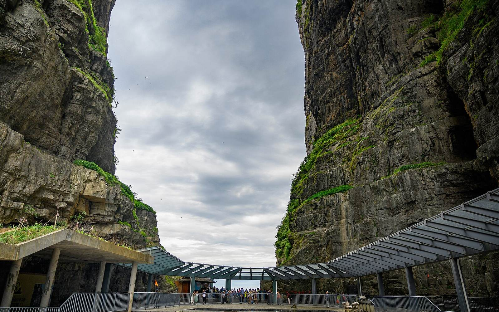
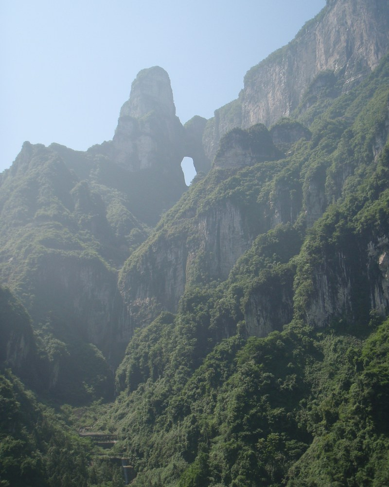

.jpg){kind=link}
Heaven’s Gate
Tianmen Cave is the natural opening in the mountain. Check whether stairs and optional escalators are available on the day.
Heaven’s Gate and the summit paths are a separate trip from the forest park. Read the cableway update before choosing your ticket.

Best for: Heaven’s Gate, cliff paths and visitors staying in the city.
When to skip or shorten: Defer in poor visibility or when your booked route is closed.
China Discovery suggests 3–5 hours for sightseeing, excluding your transfer and queues. Its route details may lag the current Route C notice; follow the dated operator notice and your booked entry slot.
Timing references reviewed 28 October 2026. Suggested durations, not live operating data. Keep meal, queue and transfer time separate.
For less walking, use available lifts and cableways and shorten the paths. This is not a step-free itinerary. In rain, check operator notices; do not substitute an exposed cliff or bridge route automatically.
From 13 October 2026, the long Tianmen Mountain cableway from the city is fully closed for construction. The reopening date has not been announced in the cited notice. A and B products are suspended.
The separate Tianmen Cave express cableway is used for Route C. The summit and cave visit should not be confused with a ride on the long city cableway.
Source: Hunan tourism notice, published 12 October 2026. Check again for your travel date.
The notice describes the upper escalator return journey as part of Route C. Lower cave escalators and other optional facilities must be checked against the product’s inclusions.
Tianmen Cave is the natural opening in the mountain. Check whether stairs and optional escalators are available on the day.
Cliff walks and viewpoints are subject to weather and maintenance closures. Do not promise every section as part of a fixed route.
These are short cliffside sections, not the Grand Canyon Glass Bridge. Confirm the open sections and any extra charge.

Stay in the city the night before. Reserve the operating product and leave room for the shuttle, queues and weather. Avoid an onward departure that depends on finishing in exactly four hours.
Published opening and entry times can change; use the reservation confirmation and current notice for your date.
The cited notice suspends them from 13 October 2026. Use Route C until the operator announces a change.
No. Route C uses the separate cave express cableway; the long city cableway is currently closed.
No. The Grand Canyon Glass Bridge is a separate attraction in Cili County.
Editorial review: 28 October 2026. Operational claims below are dated, not a live status feed.